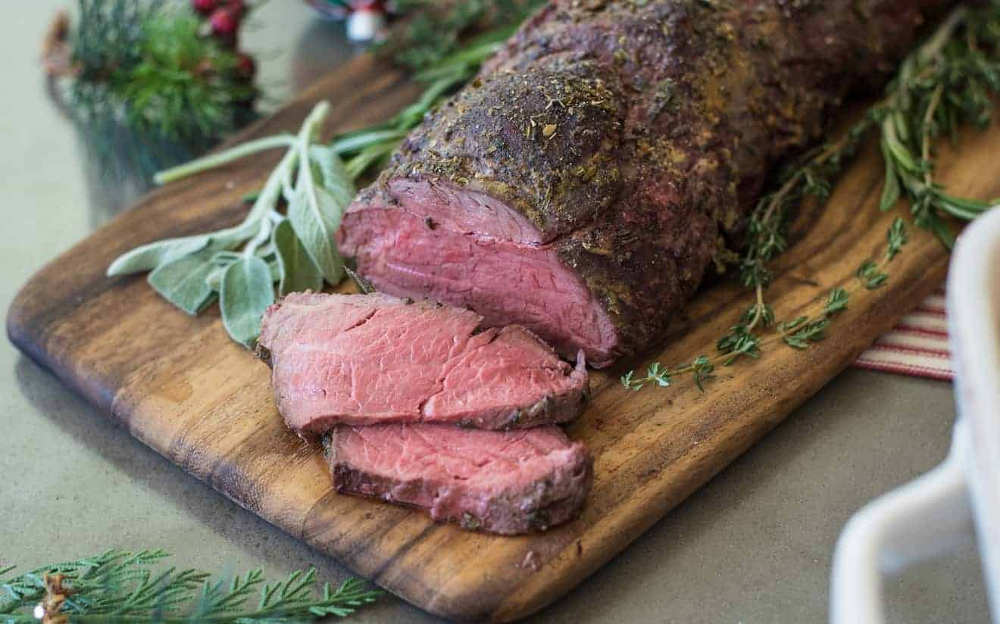

The Perfect Roast Beef

The Perfect Roast Beef (Medium Rare)
Hands down my favorite roast beef recipe! This recipe was inspired by
TheCooknShare YouTube channel. You'll find that the seasoning is a bit more rich in this
version.
Prep Time:
10 mins
Cook Time:
60 mins
Servings:
6
Ingredients
For the roast beef:
- 3lb (round roast or the roast of your choice)
- 1.5 tsp dried thyme
- 1 tsp dried rosemary
- 1.5 tsp Salt
- 1 tsp pepper
- 2 tsp minced garlic
- 2 tbsp olive oil
For the gravy:
- 2 tbs unsalted butter
- 2 tablespoons flour
- 3/4 cups beef or vegetable stock
- Juices from the roast
Utensils
- Metal baking tray
- Aluminium foil
- Small bowl (to mix the spices)
- Whisk
- Small sauce pan
Steps
For the roast:
- Preheat your oven to 500 degrees F or 260 degrees C.
- Line a metal baking tray with aluminum foil.
- Place the thyme, rosemary, pepper, salt, and garlic
into a small bowl and mix until well combined.
- Rub the roast with olive oil. Massage the top with half
of the spices. Do the same for the other side.
- Place the roast in the oven and bake for 5 minutes per
pound.
- Turn the heat off (do not open the oven door) and allow
to roast for an additional 15 minutes per pound.
- Remove the roast from the oven and allow to rest for an
additional 15 minutes.
For the gravy:
- While the roast is resting, add the butter to a small sauce
pan over medium heat and allow it to melt down. Put the flour in
and whisk until a roux forms. Keep whisking until desired
level of brownness is achieved.
- Add in the juices from the roast and the beef stock. Whisk
until well incorporated and the gravy thickens.
- Slice the beef, pour the gravy over, and serve with the
vegetables of your choice.
Back to main page